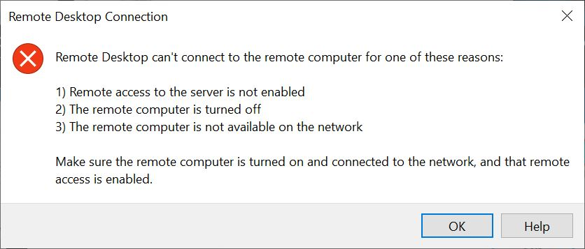

Troubleshooting
- Consider using the virtual reading room when others aren't using your internet for high bandwidth activities (e.g. Zoom).
- Use a secure, password-protected network (i.e. not an open, public wifi connection).
- If you're on a VPN, you may have a slower viewing experience.
Connecting
If you see this message and cannot connect, make sure you signed into the VCL website and clicked "Connect!"

Video
- Videos are best experienced on Windows computers.
- If you have a 4K resolution monitor, adjust your desktop resolution to 1920x1080.
- For optimal video quality, decrease the size of the video, so that it’s not full screen.
Need help?
Email us at library_specialcollections@ncsu.edu.